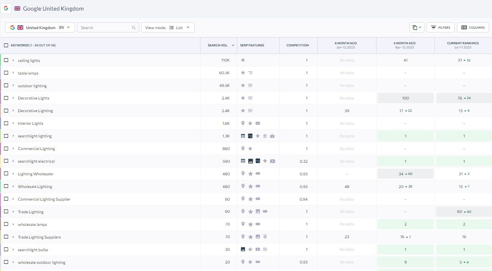

Searchlight Electric · SEO
SEO & Organic Search Visibility
SEO recommendations, content writing and in-house implementation in collaboration with a specialist agency using Semrush, with measurable ranking improvements across commercially relevant Google UK searches over a three-month period.
The challenge
Turning the brief into measurable marketing.
Searchlight needed stronger organic visibility for competitive, non-branded lighting searches as part of its wider digital and e-commerce activity.
My approach
What I delivered.
I collaborated with Searchlight’s SEO agency, which used Semrush for keyword research and monitoring, while I also provided recommendations based on the opportunities identified. I was responsible for implementing the work in-house, including SEO content writing and blogging, producing and uploading product and category copy, optimising meta titles and descriptions, improving internal linking, implementing technical SEO recommendations and optimising images. Where changes required development support, I worked with the developers to implement them. The agency supplied ranking reports used to monitor progress. Over the three-month reporting period, tracked terms showed substantial movement, including Wholesale Lighting improving from position 48 to 13 and Decorative Lighting from 39 to 13.

Keyword ranking movement over a three-month period, shown as recorded in the supplied Google UK SEO report.